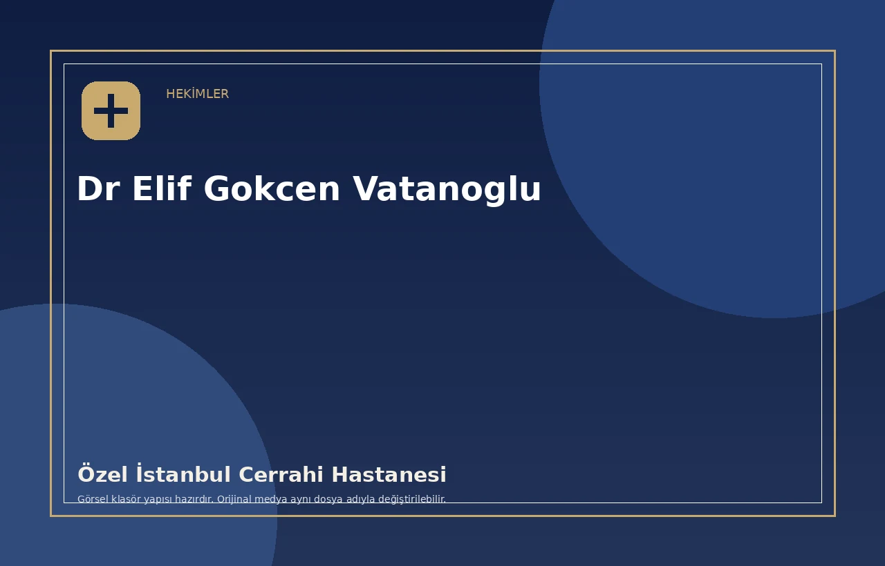

Tanıtım / Sesli CV Alanı
Uzm. Dr. Elif Gökçen VATANOĞLU, Özel İstanbul Cerrahi Hastanesi Kardiyoloji Bölümü'nde görev yapmaktadır. İstanbul Üniversitesi Cerrahpaşa Tıp Fakültesi mezunu olan Dr. VATANOĞLU, Siyami Ersek Göğüs Kalp ve Damar Cerrahisi Eğitim ve Araştırma Hastanesi'nde ihtisasını tamamlamıştır.
Video veya sesli CV bağlantısı yönetim panelinden eklendiğinde bu alanda gösterilebilir.
Özgeçmiş
Kardiyoloji UzmanıÖzel İstanbul Cerrahi Hastanesi · Günümüz
Tıpta Uzmanlık — KardiyolojiSiyami Ersek Göğüs Kalp ve Damar Cerrahisi Hastanesi
Eğitim Bilgileri
Tıp Doktoru (MD)İstanbul Üniversitesi Cerrahpaşa Tıp Fakültesi · 2009 – 2015
Tıpta Uzmanlık — KardiyolojiSiyami Ersek Göğüs Kalp ve Damar Cerrahisi Eğitim ve Araştırma Hastanesi